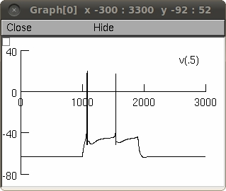
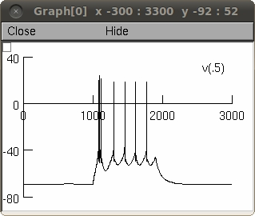
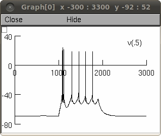

Neuron files for the paper: Halnes, Augustinaite, Heggelund, Einevoll,
Migliore (2011) A Multi-Compartment Model for Interneurons in the
Dorsal Lateral Geniculate Nucleus. PLoS Comp. Biol. 7: e1002160
The model was adapted to experimental Current-Clamp data from two
interneurons in the dLGN (IN1 and IN2). Two respective
parameterizations were obtained (P1 & P2).
Each parameterization qualitatively reproduces the response pattern of
the respective neuron under 8 different experimental
conditions. Furthermore, quantitative data on #APs elicited as a
function of injected current was reproduced.
These model files were supplied by Geir Halnes.
Use: These files require the NEURON simulator available from
www.neuron.yale.edu. After installing NEURON either auto-launch (may
require configuring your browser) or download and extract this archive
and compile the mod files (mswin: run mknrndll, mac: drag and drop the
archive folder onto mknrndll, linux/unix: type "nrnivmodl" in a shell
in the archive folder). Start the simulation (mswin: double click the
mosinit.hoc file, mac: drag and drop the mosinit.hoc file onto nrngui,
linux/unix: type "nrngui mosinit.hoc" in the archive folder). Once
the simulation starts click the buttons with the following options:
P1: MP = -63
Opens the model with Parameterization 1.
Model for interneuron with resting potential at -63mV.
The user can change the amplitude of the injected current
(-150pA, -25pA, 20pA, 55pA, 60pA, 65pA, 70pA used in paper)
The 55pA default setting reproduces the fourth trace in figure 4 A1
(when Init & Run is clicked):

P1: HP = -57
Opens the model with Parameterization 1.
Uses a continous weak current injection (22pA) to obtain a holding
potential of -57mV. Strong hyperpolarizing current injection (-150pA)
is then followed by a rebound burst.
Here Init & Run click will produce figure 4 B1:
 P2: MP = -69
Opens the model with Parameterization 2.
Model for interneuron with resting potential at -69mV.
The user can change the amplitude of the injected current
(-150pA, -25pA, 20pA, 40pA, 50pA, 60pA, 70pA used in paper)
Here the setting of 40pA will reproduce the 4th trace in Fig 4 A2:

P2: HP = -58
Opens the model with Parameterization
Uses a continous weak current injection (12pA) to obtain a holding
potential of -58mV.
Strong hyperpolarizing current injection (-150pA) is followed by a
subthreshold rebound response, figure 4 B2:
P2: MP = -69
Opens the model with Parameterization 2.
Model for interneuron with resting potential at -69mV.
The user can change the amplitude of the injected current
(-150pA, -25pA, 20pA, 40pA, 50pA, 60pA, 70pA used in paper)
Here the setting of 40pA will reproduce the 4th trace in Fig 4 A2:

P2: HP = -58
Opens the model with Parameterization
Uses a continous weak current injection (12pA) to obtain a holding
potential of -58mV.
Strong hyperpolarizing current injection (-150pA) is followed by a
subthreshold rebound response, figure 4 B2:
 20130530 update by Geir to include a missing parameter value in
INmodel.hoc. Doesn't change results if used as-is.
20130530 update by Geir to include a missing parameter value in
INmodel.hoc. Doesn't change results if used as-is.